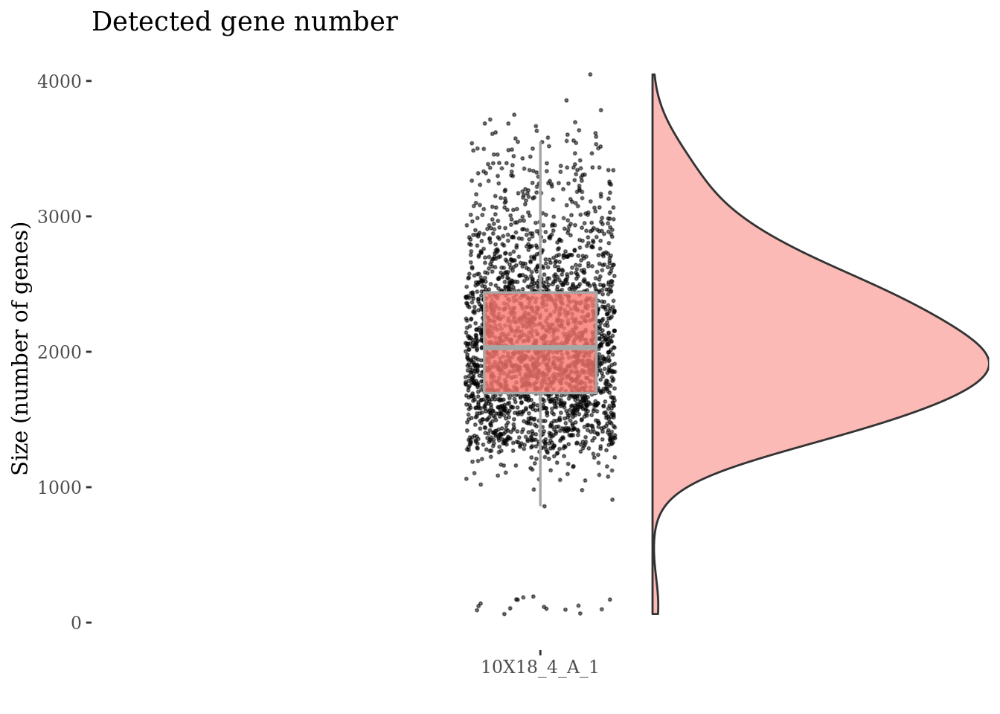
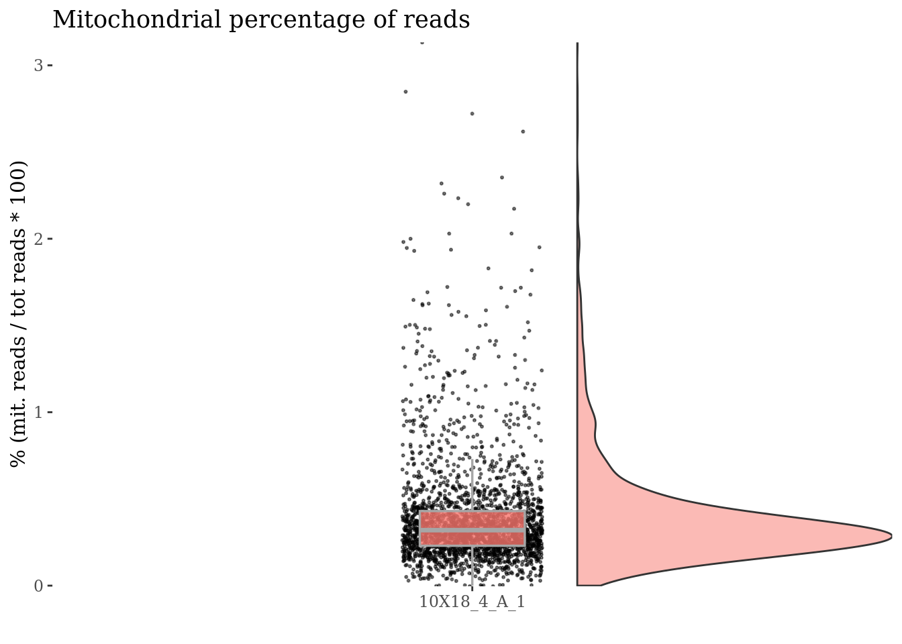
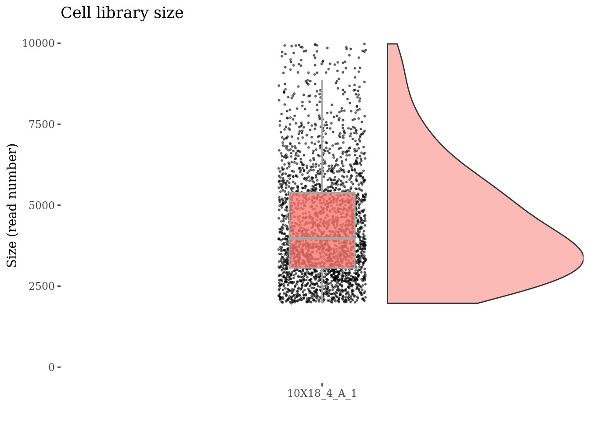
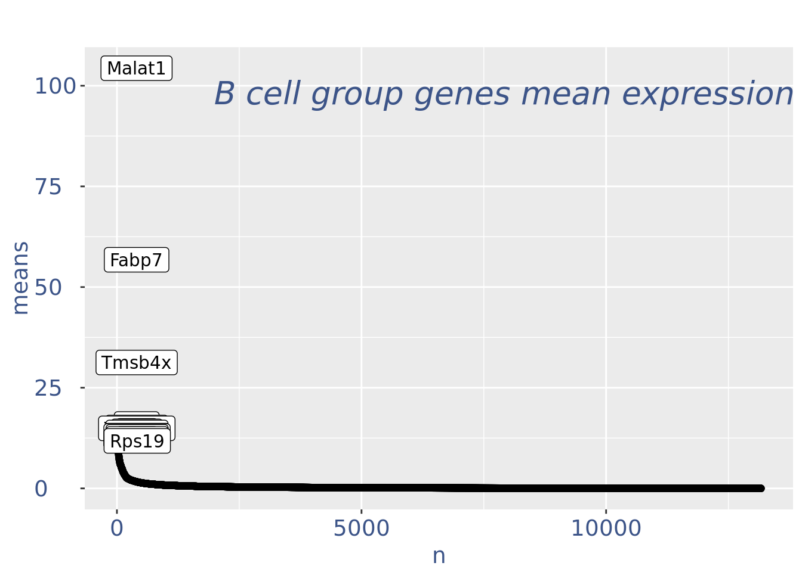
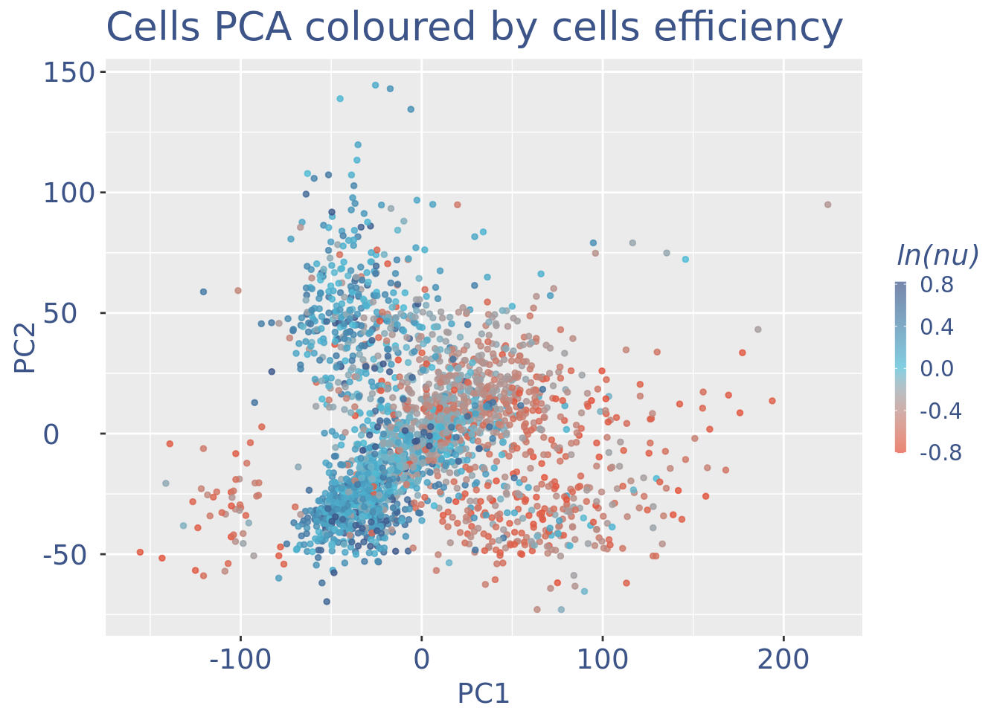
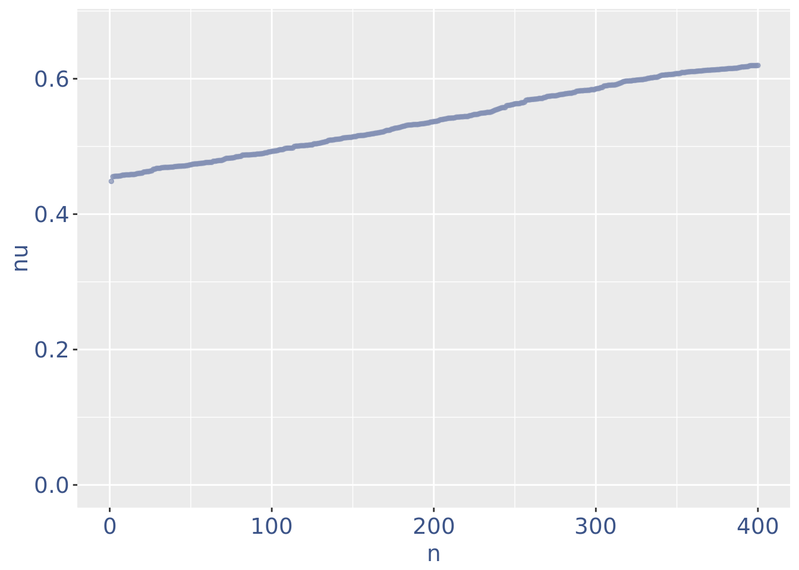

library(ggplot2)
library(tibble)
library(zeallot)
library(COTAN)
#devtools::load_all("../COTAN/")
options(parallelly.fork.enable = TRUE)
outDir <- "Data/MouseCortexFromLoom/"
if (!file.exists(outDir)) {
dir.create(outDir)
}
setLoggingLevel(2)
setLoggingFile(file.path(outDir, "ForebrainDorsal_E175-analysis.log"))Forebrain Dorsal E17.5 Data-set Anaysis
Read the already created COTAN object
fb175Obj <- readRDS(file.path("Data/MouseCortexFromLoom/SourceData/", "e17.5_ForebrainDorsal.cotan.RDS"))
sampleCondition <- getMetadataElement(fb175Obj, datasetTags()[["cond"]])
sampleCondition[1] "e17.5_ForebrainDorsal"Inspect cells’ sizes
cellSizePlot(fb175Obj, splitPattern = ":", numCol = 1)Drop cells with too many reads reads as they are probably doublets
cellsSizeThr <- 10000
fb175Obj <- addElementToMetaDataset(fb175Obj, "Cells size threshold", cellsSizeThr)
cells_to_rem <- getCells(fb175Obj)[getCellsSize(fb175Obj) > cellsSizeThr]
fb175Obj <- dropGenesCells(fb175Obj, cells = cells_to_rem)
cellSizePlot(fb175Obj, splitPattern = ":", numCol = 1)Inspect the number of expressed genes per cell
genesSizePlot(fb175Obj, splitPattern = ":", numCol = 1)
Drop cells with too low genes expression as they are probably dead
genesSizeLowThr <- 700
fb175Obj <- addElementToMetaDataset(fb175Obj, "Num genes low threshold", genesSizeLowThr)
numExprGenes <- getNumExpressedGenes(fb175Obj)
cells_to_rem <- names(numExprGenes)[numExprGenes < genesSizeLowThr]
fb175Obj <- dropGenesCells(fb175Obj, cells = cells_to_rem)
genesSizePlot(fb175Obj, splitPattern = ":", numCol = 1)Check number of mitochondrial genes expressed in each cell
mitGenesPattern <- "^mt."
getGenes(fb175Obj)[grep(mitGenesPattern, getGenes(fb175Obj))][1] "mt.Co1" "mt.Co3" "mt.Nd4" "mt.Nd5" "mt.Nd1" "mt.Nd2"c(mitPlot, mitSizes) %<-%
mitochondrialPercentagePlot(fb175Obj, genePrefix = mitGenesPattern,
splitPattern = ":", numCol = 1)
plot(mitPlot)
Cells with a too high percentage of mitochondrial genes are likely dead (or at the last problematic) cells. So we drop them!
mitPercThr <- 1.5
fb175Obj <- addElementToMetaDataset(fb175Obj, "Mitoc. perc. threshold", mitPercThr)
cells_to_rem <- rownames(mitSizes)[mitSizes[["mit.percentage"]] > mitPercThr]
fb175Obj <- dropGenesCells(fb175Obj, cells = cells_to_rem)
c(mitPlot, mitSizes) %<-%
mitochondrialPercentagePlot(fb175Obj, genePrefix = mitGenesPattern,
splitPattern = ":", numCol = 1)
plot(mitPlot)Check no further outlines after all the culling
cellSizePlot(fb175Obj, splitPattern = ":", numCol = 1)
genesSizePlot(fb175Obj, splitPattern = ":", numCol = 1)
Clean: round 1
fb175Obj <- clean(fb175Obj)
c(pcaCellsPlot, pcaCellsData, genesPlot,
UDEPlot, nuPlot, zoomedNuPlot) %<-% cleanPlots(fb175Obj)
plot(pcaCellsPlot)plot(genesPlot)
fb175Obj <- addElementToMetaDataset(fb175Obj, "Num drop B group", 0)Visualize if all is ok:
plot(UDEPlot)
plot(nuPlot)plot(zoomedNuPlot)
Final cleaning to check all is OK
fb175Obj <- clean(fb175Obj)
c(pcaCellsPlot, pcaCellsData, genesPlot,
UDEPlot, nuPlot, zoomedNuPlot) %<-% cleanPlots(fb175Obj)
plot(pcaCellsPlot)
plot(genesPlot)
plot(UDEPlot)
plot(nuPlot)
plot(zoomedNuPlot)
plot(cellSizePlot(fb175Obj, splitPattern = ":", numCol = 1))
plot(genesSizePlot(fb175Obj, splitPattern = ":", numCol = 1))Calculate genes’ COEX
fb175Obj <- proceedToCoex(fb175Obj, calcCoex = TRUE, cores = 12,
saveObj = TRUE, outDir = outDir)gdiData <- calculateGDI(fb175Obj)
genesToLabel <- head(rownames(gdiData[order(gdiData[["GDI"]],
decreasing = TRUE), ]), n = 10L)
genesToLabel [1] "Mfge8" "Myt1l" "Atp1a2" "Sparc" "Apoe" "Phgdh"
[7] "Slc9a3r1" "Tnc" "Ccdc80" "Aldoc" gdiPlot <- GDIPlot(fb175Obj, GDIIn = gdiData, GDIThreshold = 1.4,
genes = list("Top 10 GDI genes" = genesToLabel))
plot(gdiPlot)Save the COTAN object
saveRDS(fb175Obj, file = file.path(outDir, paste0(sampleCondition, ".cotan.RDS")))c(splitClusters, splitCoexDF) %<-%
cellsUniformClustering(fb175Obj, GDIThreshold = 1.4, cores = 13L,
saveObj = TRUE, outDir = outDir)
fb175Obj <- addClusterization(fb175Obj, clName = "split",
clusters = splitClusters,
coexDF = splitCoexDF, override = TRUE)splitClusters <- getClusterizationData(fb175Obj,clName = "split")$clusters
table(splitClusters)splitClusters
-1 20 04 05 06 07 10 22 11 08 21 23 16 12 18 24 09 14 15 13
10 384 130 119 82 53 44 40 32 22 413 166 159 91 55 50 15 202 146 70
02 01 03 17 19
50 37 32 35 30 c(mergedClusters, mergedCoexDF) %<-%
mergeUniformCellsClusters(fb175Obj, clusters = splitClusters,
GDIThreshold = 1.4, batchSize = 20L, cores = 13L,
saveObj = TRUE, outDir = outDir)
fb175Obj <- addClusterization(fb175Obj, clName = "merge",
clusters = mergedClusters,
coexDF = mergedCoexDF,
override = TRUE)mergedClusters <- getClusterizationData(fb175Obj,clName = "merge")$clusters
table(mergedClusters)mergedClusters
16 03 04 05 06 07 18 01 02 12 19 14 13 15 17 08 09 10 11
65 37 50 32 130 119 135 22 15 44 32 237 100 202 194 384 413 90 166 Sys.time()[1] "2023-08-22 11:46:58 CEST"sessionInfo()R version 4.3.1 (2023-06-16)
Platform: x86_64-pc-linux-gnu (64-bit)
Running under: Ubuntu 20.04.6 LTS
Matrix products: default
BLAS: /usr/lib/x86_64-linux-gnu/blas/libblas.so.3.9.0
LAPACK: /usr/lib/x86_64-linux-gnu/lapack/liblapack.so.3.9.0
locale:
[1] LC_CTYPE=C.UTF-8 LC_NUMERIC=C LC_TIME=C.UTF-8
[4] LC_COLLATE=C.UTF-8 LC_MONETARY=C.UTF-8 LC_MESSAGES=C.UTF-8
[7] LC_PAPER=C.UTF-8 LC_NAME=C LC_ADDRESS=C
[10] LC_TELEPHONE=C LC_MEASUREMENT=C.UTF-8 LC_IDENTIFICATION=C
time zone: Europe/Rome
tzcode source: system (glibc)
attached base packages:
[1] stats graphics grDevices utils datasets methods base
other attached packages:
[1] COTAN_2.1.7 zeallot_0.1.0 tibble_3.2.1 ggplot2_3.4.2
loaded via a namespace (and not attached):
[1] RColorBrewer_1.1-3 rstudioapi_0.15.0 jsonlite_1.8.7
[4] shape_1.4.6 umap_0.2.10.0 magrittr_2.0.3
[7] spatstat.utils_3.0-3 farver_2.1.1 rmarkdown_2.24
[10] GlobalOptions_0.1.2 vctrs_0.6.3 ROCR_1.0-11
[13] spatstat.explore_3.2-1 askpass_1.1 htmltools_0.5.5
[16] sctransform_0.3.5 parallelly_1.36.0 KernSmooth_2.23-22
[19] htmlwidgets_1.6.2 ica_1.0-3 plyr_1.8.8
[22] plotly_4.10.2 zoo_1.8-12 igraph_1.5.1
[25] mime_0.12 lifecycle_1.0.3 iterators_1.0.14
[28] pkgconfig_2.0.3 Matrix_1.6-0 R6_2.5.1
[31] fastmap_1.1.1 fitdistrplus_1.1-11 future_1.33.0
[34] shiny_1.7.5 clue_0.3-64 digest_0.6.33
[37] colorspace_2.1-0 patchwork_1.1.2 S4Vectors_0.38.1
[40] Seurat_4.3.0.1 tensor_1.5 RSpectra_0.16-1
[43] irlba_2.3.5.1 labeling_0.4.2 progressr_0.14.0
[46] RcppZiggurat_0.1.6 fansi_1.0.4 spatstat.sparse_3.0-2
[49] httr_1.4.6 polyclip_1.10-4 abind_1.4-5
[52] compiler_4.3.1 withr_2.5.0 doParallel_1.0.17
[55] viridis_0.6.4 dendextend_1.17.1 MASS_7.3-60
[58] openssl_2.1.0 rjson_0.2.21 tools_4.3.1
[61] lmtest_0.9-40 httpuv_1.6.11 future.apply_1.11.0
[64] goftest_1.2-3 glue_1.6.2 nlme_3.1-162
[67] promises_1.2.0.1 grid_4.3.1 Rtsne_0.16
[70] cluster_2.1.4 reshape2_1.4.4 generics_0.1.3
[73] gtable_0.3.3 spatstat.data_3.0-1 tidyr_1.3.0
[76] data.table_1.14.8 sp_2.0-0 utf8_1.2.3
[79] BiocGenerics_0.46.0 spatstat.geom_3.2-4 RcppAnnoy_0.0.21
[82] ggrepel_0.9.3 RANN_2.6.1 foreach_1.5.2
[85] pillar_1.9.0 stringr_1.5.0 later_1.3.1
[88] circlize_0.4.15 splines_4.3.1 dplyr_1.1.2
[91] lattice_0.21-8 survival_3.5-5 deldir_1.0-9
[94] tidyselect_1.2.0 ComplexHeatmap_2.16.0 miniUI_0.1.1.1
[97] pbapply_1.7-2 knitr_1.43 gridExtra_2.3
[100] IRanges_2.34.1 scattermore_1.2 stats4_4.3.1
[103] xfun_0.39 factoextra_1.0.7 matrixStats_1.0.0
[106] stringi_1.7.12 lazyeval_0.2.2 yaml_2.3.7
[109] evaluate_0.21 codetools_0.2-19 cli_3.6.1
[112] RcppParallel_5.1.7 uwot_0.1.16 xtable_1.8-4
[115] reticulate_1.30 munsell_0.5.0 Rcpp_1.0.11
[118] globals_0.16.2 spatstat.random_3.1-5 png_0.1-8
[121] parallel_4.3.1 Rfast_2.0.8 ellipsis_0.3.2
[124] assertthat_0.2.1 parallelDist_0.2.6 listenv_0.9.0
[127] ggthemes_4.2.4 viridisLite_0.4.2 scales_1.2.1
[130] ggridges_0.5.4 SeuratObject_4.1.3 leiden_0.4.3
[133] purrr_1.0.1 crayon_1.5.2 GetoptLong_1.0.5
[136] rlang_1.1.1 cowplot_1.1.1